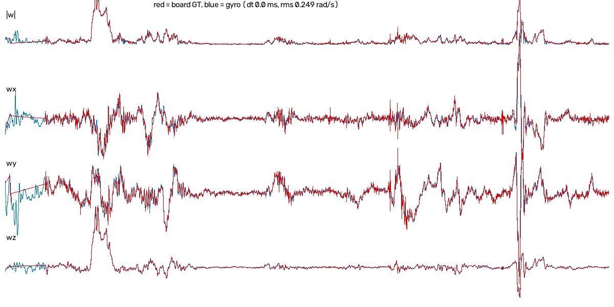

카메라·센서 설정 한눈에 보기
지금 쓰는 촬영 방식 3가지와, 각 설정이 무슨 뜻인지 쉬운 말로 정리했습니다 (2026-10-19 기준).
① 촬영 방식 3가지
📷 광각 단안 60 fps
보정판 정답 녹화용 (지금 주력). 폰 화면에 실시간 마커 표시.
렌즈 5 (광각)960x72060 fps노출 2 ms⚡ 고속 240 fps
보정판 정답 녹화용 (더 촘촘한 정답). 폰 화면 미리보기 없음.
주 카메라1920x1080240 fps노출 4 ms (자동)📐 ARCore (비교용)
구글 위치 추적. 논문 비교용으로만 남김.
렌즈 5640x48030 fps노출 자동 (~17 ms)② 방식별 설정 비교
| 설정 | 광각 단안 60 | 고속 240 | ARCore |
|---|---|---|---|
| 렌즈 | 광각 (5) | 주 카메라 (광각) | 광각 (5) |
| 해상도 | 960x720 (선택 가능) | 1920x1080 (1280x720 가능) | 640x480 |
| 프레임 | 60 fps | 240 fps | 30 fps |
| 노출 (번짐) | 2 ms 고정 | 4.0 ms (못 바꿈) | 자동 ~17 ms |
| 밝기 맞춤 | 감도(ISO) 자동 조절 | 폰이 자동 | 폰이 자동 |
| 롤링 셔터 (위↔아래 시간차) | 8.7 ms | 2.9 ms | 측정 안 함 |
| 노이즈 제거 / 선명화 | 끔 | 폰 기본 (못 바꿈) | 폰 기본 |
| 밝기 곡선 | 고정 (감마 2.2) | 폰 기본 | 폰 기본 |
| 화이트밸런스 | 노출 고정 후 잠금 | 폰 기본 | 폰 기본 |
| 손떨림 보정 (OIS·영상) | 끔 | 끔 | 끔 |
| 초점 | 1 m 고정 | 자동 | 고정 |
| 왜곡 보정 모드 | 원래 값으로 고정 | 폰 기본 | 폰 기본 |
| 렌즈 보정값 | 체커보드 보정 파일 | 녹화 속 보정판으로 자동 | 구글 공장값 |
| IMU (센서) | 500 Hz 원시값 전부 | 500 Hz 원시값 전부 | ARCore 내부 |
| 영상 시각 | 노출 가운데 | 노출 가운데 (시계 보정) | ARCore 값 |
| 폰 화면 | 흑백 60 fps + 마커 표시 | 없음 | 상태 글자만 |
| 저장 | 영상 + IMU → PC 자동 | 영상 + IMU → 버튼으로 PC | 측정값만 PC |
| 용량 (1분) | 약 190 MB | 약 300 MB | - |
③ 설정이 뭔 뜻인지 (쉬운 말)
길수록 빛을 많이 받아 밝지만, 움직이면 번집니다. 짧을수록 선명하지만 어두워서 감도(ISO)를 올려야 하고, 그만큼 자글자글한 노이즈가 늘어납니다. 240 fps는 한 장이 1/240초라 노출이 최대 4.2 ms를 넘을 수 없고, 폰이 알아서 4 ms로 정합니다(직접 못 바꿈).
맨 위 줄과 맨 아래 줄이 찍히는 시간이 다릅니다(지금 60 fps 모드 8.7 ms, 240 fps 모드 2.9 ms). 빠르게 돌리면 똑바른 판이 기울어져 찍혀서 정답이 틀어집니다. 짧을수록 좋습니다.
어두울 때 밝게 키우는 증폭. 높을수록 노이즈 증가. 지금은 영상 밝기를 보고 0.5초마다 자동으로 맞춥니다 (밝은 부분이 하얗게 날아가지 않게).
폰이 사진을 "예쁘게" 만들려고 뭉개고 날카롭게 하는 처리. 마커 모서리 위치를 바꿀 수 있어 껐습니다.
프레임마다 밝기·색 처리가 바뀌면 특징점 추적이 흔들려서 고정합니다.
렌즈가 몰래 움직이면 카메라 보정값이 틀어져서 끕니다.
폰이 영상 휘어짐을 펴는 기능. 렌즈 보정을 한 때와 같은 상태로 묶어 둡니다.
사진이 "언제" 찍혔는지를 셔터가 열린 시간의 한가운데로 기록. IMU와 맞출 때 기준이 됩니다. 고속 모드는 폰이 다른 시계를 써서 맞춰 줬습니다.
④ 보정판 정답 녹화엔 뭐가 좋나
| 광각 단안 60 | 고속 240 | |
|---|---|---|
| 번짐 (노출) | 2 ms — 더 선명 | 4 ms |
| 롤링 셔터 | 8.7 ms | 2.9 ms — 3배 짧음 |
| 정답 개수 (1초) | 60 | 240 — 4배 |
| 해상도 | 960x720 | 1920x1080 |
| 찍으며 확인 | 폰 화면에 마커 표시 | 미리보기 없음 |
| 결론 | 빠른 동작이 많으면 240, 천천히 정밀하게면 60 (둘 다 학습에 같이 쓸 수 있음) | |
수치: 노출·롤링 셔터는 폰에서 실측 (2026-10-19). 어느 쪽 정답이 더 정확한지는 240 fps 녹화가 쌓이면 비교 예정.
⑤ IMU 값과 카메라 값을 어떻게 믿나
"믿는다"는 말 대신, 서로 독립된 방법으로 같은 값이 나오는지 확인했습니다. 숫자는 모두 실측입니다.
| 모서리 맞음 (재투영 오차) | 0.46~0.51 픽셀 |
| 판 인식률 (긴 녹화) | 92~94 % |
| 판 크기 | 자로 잼 37.0 mm (±0.4 %) |
| 렌즈 보정 교차 확인 | 녹화 속 판으로 다시 구한 값과 1~2 % 차이 |
| 튀는 프레임 | 자이로와 3° 넘게 다르면 버림 |
재투영 오차 = 계산한 판 자세로 모서리를 다시 그렸을 때 실제 모서리와의 거리. 0.5 픽셀이면 매우 잘 맞는 편.
| 가만히 둘 때 가속도 크기 | 9.809 m/s² (중력 9.807과 일치) |
| 가만히 둘 때 자이로 | 0.002 rad/s (거의 0) |
| 샘플 간격 | 정확히 2.00 ms (500 Hz) |
| 빠진 샘플 | 0개 (6만 4천 개 중) |
| 값 종류 | 원시값 (안드로이드 가공 없음) |
S24 가속도가 묶음으로 오는 문제는 보간으로 해결 (모든 샘플 사용).
| 0.2초 자세 변화 비교 (천천히) | 0.54~0.64° 차이 |
| 시간차 | −4.6 ~ +1.6 ms |
| 방향 (녹화끼리) | 1.3° 이내로 같음 |
| 방향 (폰 공장값과) | 0.9~1.8° 차이 |
카메라가 본 회전과 자이로가 잰 회전이 따로 계산되는데도 거의 같게 나옴 → 둘 다, 그리고 맞춤도 맞다는 근거.

녹화 21:27 (천천히). 두 선이 거의 겹침. 위에서부터 회전 크기, x·y·z 축.
- 빠르게 흔들 때 정답: 롤링 셔터·번짐으로 판 자세가 1~2° 흔들림 → 학습할 때 덜 믿게 처리. 240 fps로 개선 기대.
- 시간차: 천천히 찍은 녹화는 ±1~2 ms로 안정, 빠른 녹화는 구간마다 ±4~5 ms 흔들림 (정답 품질 탓으로 추정).
- 레버암 (카메라–IMU 거리): 학습으로 약 5.5 cm로 나왔지만 아직 검증 안 됨.